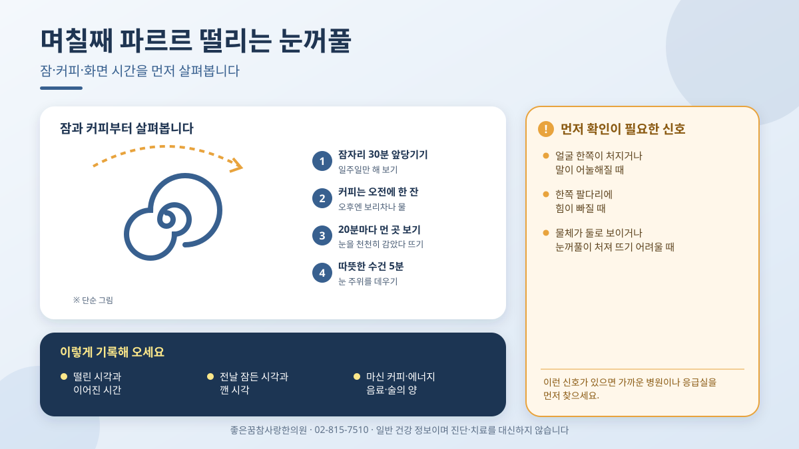

이종호 한의사 감수좋은꿈참사랑한의원 대표원장 (한의사 면허번호 19769)발행 2026-11-26 · 수정 2026-11-26
이 글의 차례
모니터를 보다가 아래 눈꺼풀이 파르르 떨립니다. 손가락으로 눌러 보면 잠시 멎는 듯하다가 다시 떨립니다. 거울을 봐도 남들 눈에는 잘 보이지 않는다는데, 나에게는 하루 종일 신경이 쓰입니다. 그렇게 며칠이 지나도 멎지 않으니 혹시 큰 병의 신호는 아닐까 걱정이 됩니다.
이렇게 한쪽 눈꺼풀, 특히 아래 눈꺼풀이 가늘게 떨리는 것은 대부분 눈꺼풀 근육의 가벼운 떨림입니다. 피로가 쌓이거나 잠이 부족할 때, 커피를 많이 마신 날, 눈이 건조하고 화면을 오래 본 날 잘 생깁니다. 며칠에서 몇 주 사이에 저절로 가라앉는 경우가 많습니다.
예부터 눈 밑이 떨리면 몸에 무언가가 부족하다는 말이 있습니다. 진료실에서도 "마그네슘을 먹어야 하나요?"라는 질문을 자주 받습니다. 영양만의 문제라기보다는 잠과 피로, 긴장, 눈의 피로가 함께 쌓인 몸의 신호로 보고 하루를 같이 돌아보는 편이 실제로 도움이 됩니다.
다만 떨림이 눈꺼풀을 넘어 입가와 볼까지 함께 당기거나, 두 눈이 저절로 꽉 감겨 뜨기 어려운 경우는 성격이 다릅니다. 이럴 때는 신경과나 안과에서 확인을 받아 보는 것이 순서입니다.
왜 눈꺼풀이 저절로 떨릴까요
눈꺼풀에는 눈을 감게 하는 얇은 둥근 근육이 있습니다. 이 근육은 하루에도 수만 번 눈을 깜빡이며 쉬지 않고 일합니다. 근육을 움직이라는 신호를 보내는 신경 끝이 예민해지면, 내가 움직이려 하지 않아도 근육의 일부가 가늘게 떨릴 수 있습니다.
이 예민함을 키우는 것으로 흔히 꼽히는 것이 잠 부족과 피로, 긴장과 스트레스, 카페인, 눈의 건조와 화면을 오래 보는 일입니다. 시험 기간, 마감이 몰린 주간, 아이가 밤에 자주 깨는 시기처럼 생활이 빡빡할 때 떨림이 시작되었다는 말씀을 많이 듣습니다.
한의학에서는 눈이 쉬지 못하고 몸의 진액이 부족해지거나, 긴장이 오래 이어져 기운이 위로 몰릴 때 눈 주위가 떨리는 것으로 보기도 합니다. 그래서 눈만 보지 않고 잠과 소화, 마음의 긴장을 함께 살핍니다.
다른 떨림과는 어떻게 다를까요
눈 주위가 떨린다고 모두 같은 것은 아닙니다. 범위와 모양을 나눠 보면 이렇습니다.
- 가벼운 눈꺼풀 떨림: 한쪽 눈꺼풀, 주로 아래 눈꺼풀이 가늘게 파르르 떨리고 남들 눈에는 잘 보이지 않습니다. 피로와 잠, 카페인에 따라 오르내리며 몇 주 안에 가라앉는 경우가 많습니다.
- 반측성 안면경련: 한쪽 눈꺼풀에서 시작해 점차 같은 쪽 볼과 입가까지 함께 씰룩이며 당깁니다. 눈이 저절로 감기고 입꼬리가 올라가는 모습이 남들 눈에도 보이고, 몇 달 넘게 이어지는 경우가 많습니다.
- 눈꺼풀 경련: 양쪽 눈이 저절로 꽉 감기거나 깜빡임이 지나치게 잦아져 눈을 뜨고 있기 어렵습니다. 밝은 빛이나 바람에 더 심해지기도 합니다.
- 눈의 자극 때문인 깜빡임: 눈이 건조하거나 속눈썹이 찌르거나 결막에 염증이 있으면 눈이 따갑고 자꾸 깜빡이게 됩니다.
거울 앞에서 떨림이 있을 때 입가를 함께 보세요. 눈꺼풀만 떨리는지, 같은 쪽 입꼬리나 볼까지 함께 움직이는지를 휴대폰 영상으로 찍어 두시면 진료실에서 큰 도움이 됩니다. 떨림은 진료실에 오는 순간 멎어 버리는 경우가 많기 때문입니다.
얼굴 한쪽이 함께 씰룩이면 따로 살핍니다
반측성 안면경련은 얼굴 근육을 움직이는 신경이 뇌 가까운 곳에서 혈관에 닿아 자극받는 것과 관계된다고 알려져 있습니다. 그래서 피로를 덜어도 쉽게 가라앉지 않고, 시간이 지나며 범위가 넓어지는 경우가 많습니다.
처음에는 아래 눈꺼풀이 떨리는 것과 구분이 어렵습니다. 그러다 몇 달에 걸쳐 같은 쪽 볼과 입꼬리까지 함께 당기고, 웃거나 말할 때 더 심해지는 흐름을 보입니다. 이런 변화가 보이면 신경과에서 진찰과 영상 검사를 받아 보시는 것이 순서입니다.
눈꺼풀 경련도 비슷합니다. 양쪽 눈을 뜨고 있기가 힘들어 운전이나 길 걷기가 어려워질 수 있어, 안과나 신경과 진료를 먼저 권합니다. 한의원에서는 그 진료를 이어 가시는 동안 잠과 긴장, 눈의 피로를 함께 살핍니다.
학생과 직장인에게 잦은 이유
진료실에서 눈꺼풀 떨림을 이야기하는 분들을 떠올려 보면 수험생과 직장인이 많습니다. 밤늦게까지 공부하거나 일하고, 아침은 커피로 시작하고, 하루 대부분을 화면 앞에서 보내는 생활이 겹치기 때문입니다.
이런 생활에서는 눈을 깜빡이는 횟수가 줄어 눈이 쉽게 마르고, 목과 어깨가 굳으며 긴장이 머리 쪽으로 몰립니다. 떨림은 그중 가장 먼저 눈에 띄는 신호일 뿐, 몸은 이미 여러 곳에서 쉬고 싶다고 말하고 있는 경우가 많습니다.
아이들도 눈을 자주 깜빡이거나 찡그리는 버릇이 생길 수 있습니다. 아이의 경우 눈이 불편해서인지, 버릇처럼 굳은 움직임인지에 따라 살필 방향이 달라져 소아청소년과나 안과 진료를 함께 권합니다.
이런 날 떨림이 잦아집니다
떨림이 잦은 날을 돌아보면 비슷한 흐름이 보입니다.
- 잠을 5~6시간도 못 잔 다음 날, 밤늦게까지 화면을 본 날
- 커피나 에너지 음료를 평소보다 많이 마신 날
- 발표나 시험, 중요한 약속을 앞두고 긴장한 날
- 난방이 강한 실내나 바람 부는 날처럼 눈이 건조한 날
- 술을 마신 다음 날, 끼니를 거르고 일한 날
- 오래 운전하거나 작은 글씨를 오래 들여다본 날
반대로 푹 자고 일어난 주말 아침이나 휴가 중에는 떨림이 거의 없었다는 말씀도 자주 듣습니다. 몸이 쉬면 떨림도 함께 쉬어 가는 흐름입니다. 이 가운데 두세 가지가 겹친 날 떨림이 가장 심하다는 분이 많습니다. 모두 바꾸기는 어렵지만, 한두 가지만 덜어도 떨림이 잦아드는 흐름을 느끼실 수 있습니다.
떨림이 마음을 더 예민하게 합니다
눈꺼풀 떨림은 아프지 않은데도 사람을 지치게 합니다. 대화하는 중에 상대가 알아챌까 신경 쓰이고, 일에 집중하려 해도 자꾸 눈가로 마음이 갑니다. 떨림에 신경을 쓸수록 긴장이 커지고, 긴장이 커질수록 떨림이 잦아지는 고리가 생기기도 합니다.
그래서 저는 떨림이 대부분 몸이 쉬어 달라고 보내는 신호라는 것을 먼저 말씀드립니다. 걱정을 내려놓는 것도 회복의 한 부분입니다. 무엇을 확인하면 되는지 알면 떨림을 바라보는 마음도 한결 가벼워집니다.
계절과 떨림
겨울에는 난방으로 실내 공기가 건조해지고, 밖에서는 찬바람이 눈을 스칩니다. 눈물이 쉽게 마르고 눈이 뻑뻑해지면서 눈꺼풀이 더 자주 떨린다는 분이 많습니다. 해가 짧아져 활동량이 줄고 잠의 리듬이 흐트러지는 것도 한몫합니다.
연말연시처럼 모임이 많아 술자리와 늦은 귀가가 이어지는 시기, 새 학기나 인사이동처럼 긴장이 큰 시기에도 떨림이 잦아집니다. 이런 때는 떨림을 억지로 멈추려 하기보다, 잠과 쉼을 조금 더 챙겨야 할 때라는 신호로 받아들여 보세요.
봄에는 꽃가루와 미세먼지로 눈이 가렵고 자꾸 비비게 되어 눈꺼풀이 예민해지기도 합니다. 계절마다 눈을 자극하는 것이 다르니, 떨림이 시작된 무렵의 날씨와 환경도 함께 떠올려 오시면 좋습니다.
먼저 이렇게 여쭙니다
처음 오시면 저는 대략 이런 순서로 여쭙습니다.
- 위 눈꺼풀인가요, 아래 눈꺼풀인가요? 한쪽인가요, 양쪽인가요?
- 떨림이 볼이나 입가까지 함께 움직이나요?
- 언제부터 떨렸나요? 하루에 몇 번, 한 번에 얼마나 이어지나요?
- 요즘 잠은 몇 시간 주무시나요? 커피와 술은 얼마나 드시나요?
- 눈이 건조하거나 따갑거나 충혈되나요? 시야가 흐리거나 겹쳐 보이나요?
- 얼굴 한쪽이 저리거나 처지는 느낌이 있나요?
- 드시는 약이나 영양제가 있나요?
눈만 보지 않고 목과 어깨의 긴장, 턱에 힘이 들어가는 버릇도 함께 봅니다. 화면을 오래 보는 분은 목이 앞으로 빠지고 어깨가 굳으면서 눈의 피로도 함께 쌓이기 쉽습니다.
일상에서 먼저 해 볼 수 있는 것
아래에서 오늘 할 수 있는 것 하나부터 골라 보세요.
- 일주일만 잠자리에 드는 시각을 30분 앞당기기
- 커피는 오전에 한 잔으로 줄이고, 오후에는 따뜻한 보리차나 물 마시기
- 화면을 20분 보면 20초쯤 먼 곳을 바라보고 눈을 천천히 감았다 뜨기
- 따뜻한 수건을 눈 위에 5분쯤 올려 눈 주위를 데우기
- 난방이 강한 방에서는 가습기를 켜거나 젖은 수건을 널어 두기
- 잠들기 30분 전에는 휴대폰을 내려놓고 어깨와 목을 천천히 풀기
떨릴 때 눈꺼풀을 세게 누르거나 비비는 것은 피해 주세요. 눈이 더 자극되고 충혈될 수 있습니다. 눈을 감고 손바닥으로 눈 위를 살며시 덮어 따뜻하게 해 주는 것으로 충분합니다.
영양제를 여러 가지 더하기 전에, 먼저 끼니를 거르지 않고 채소와 견과류, 잡곡을 고루 드시는 것부터 챙겨 보세요. 드시는 영양제가 있다면 진료실에서 함께 확인합니다.
렌즈를 끼는 분이라면 떨림이 있는 동안은 끼는 시간을 줄이고 안경으로 바꿔 보세요. 렌즈가 눈을 마르게 하고 눈꺼풀이 더 자주 깜빡이게 만들 수 있습니다. 눈 화장을 지울 때도 눈꺼풀을 세게 문지르지 않도록 해 주세요.
일하는 자리를 조금 바꾸는 것도 도움이 됩니다. 모니터는 눈높이보다 조금 낮게 두어 눈을 크게 뜨지 않아도 되게 하고, 히터나 에어컨 바람이 얼굴로 바로 오지 않게 방향을 돌려 두세요. 작은 조정이 하루 내내 눈의 부담을 덜어 줍니다.
한의원에서 함께 살필 수 있는 경우
- 눈꺼풀 떨림이 몇 주째 오르내리며 피로와 긴장이 함께 쌓인 경우
- 잠이 얕고 자주 깨며 낮에도 눈이 쉽게 피로한 경우
- 화면을 오래 보는 일로 눈과 목, 어깨가 함께 굳은 경우
- 신경과나 안과 진료를 받은 뒤 생활과 몸의 리듬을 함께 살피고 싶은 경우
좋은꿈참사랑한의원에 처음 오시면 떨림의 범위와 모양을 먼저 함께 확인하고, 찍어 오신 영상이 있으면 같이 봅니다. 그다음 맥을 짚으며 잠과 소화, 체온, 긴장의 정도를 여쭙습니다.
침은 진찰을 거쳐 눈 주위보다 손발, 목과 어깨처럼 긴장이 쌓인 자리를 먼저 살펴 정합니다. 눈 주위에 침을 쓸지는 떨림의 모양과 눈 상태를 보고 신중하게 정합니다.
잠이 얕고 쉽게 피로하며 긴장이 오래 이어진다면 진찰 뒤 필요할 때 한약도 상의합니다. 드시는 약이나 영양제가 있으면 이름을 모두 알려 주세요. 함께 드셔도 되는지 먼저 확인합니다.
반측성 안면경련이나 눈꺼풀 경련이 의심되면 신경과나 안과 진료를 먼저 권하고, 그 진료를 이어 가시면서 한의원에서는 잠과 긴장을 함께 살피는 쪽으로 안내드립니다.
다시 오시면 지난번 이후 떨림이 잦았던 날과 그 전날의 잠, 커피 양부터 이어서 여쭙니다. 바꿔 보기로 한 습관 가운데 지킬 만했던 것과 어려웠던 것을 나눠, 생활에 맞게 함께 다듬어 갑니다.
이렇게 기록해 오시면 상담이 쉬워집니다
떨림은 진료실에서 잘 보이지 않는 경우가 많습니다. 일주일만 적어 보세요.
- 떨렸던 시각과 이어진 시간, 위인지 아래인지
- 전날 잠든 시각과 깬 시각
- 그날 마신 커피와 에너지 음료, 술의 양
- 화면을 본 시간과 긴장했던 일
- 떨릴 때 찍은 짧은 영상 한두 개
기록을 보면 떨림과 잠, 커피가 어떻게 맞물려 있는지 함께 보입니다. 어떤 것부터 바꿀지 정하는 데 가장 좋은 길잡이가 됩니다. 빠진 날이 있어도 괜찮습니다. 기억나는 날부터 같이 펼쳐 보겠습니다.
이런 증상은 먼저 확인이 필요합니다
- 눈꺼풀 떨림과 함께 얼굴 한쪽이 처지거나 말이 어눌해지고 한쪽 팔다리에 힘이 빠지는 경우
- 갑자기 물체가 둘로 겹쳐 보이거나 눈꺼풀이 처져 눈을 뜨기 어려운 경우
이런 신호가 있으면 한의원보다 가까운 병원이나 응급실을 먼저 찾으세요.
작은 떨림 하나가 하루를 이렇게 신경 쓰이게 할 줄 몰랐다는 분이 많습니다. 몸이 보내는 쉼의 신호를 같이 읽어 보면, 떨림 너머의 피로와 긴장이 보입니다. 잠과 하루의 리듬부터 차근차근 함께 살펴보겠습니다.
함께 읽으면 좋은 글
- 얼굴 근육이 파르르 떨릴 때는 어떤 점을 먼저 확인하나요?
- 인강을 오래 보면 눈이 뻑뻑하고 머리가 무거울 때는 어떻게 하나요?
- 눈이 뻑뻑하고 모래가 들어간 듯 따갑거나 쉽게 피로한 안구건조증은 어떻게 살피나요?
- 모니터를 오래 보고 나면 눈이 뻑뻑하고 이마와 관자놀이가 아플 때는 어떻게 하나요?
- 스트레스를 받으면 뒷목이 당기고 머리가 아픈 긴장성 두통은 어떻게 살피나요?

여쭙는 것
- 위 눈꺼풀인가요, 아래 눈꺼풀인가요? 한쪽인가요, 양쪽인가요?
- 떨림이 볼이나 입가까지 함께 움직이나요?
- 언제부터 떨렸나요? 하루에 몇 번, 한 번에 얼마나 이어지나요?
생활에서 해 볼 것
- 일주일만 잠자리에 드는 시각을 30분 앞당기기
- 커피는 오전에 한 잔으로 줄이고, 오후에는 따뜻한 보리차나 물 마시기
- 화면을 20분 보면 20초쯤 먼 곳을 바라보고 눈을 천천히 감았다 뜨기
한의원에서 함께 살필 것
- 눈꺼풀 떨림이 몇 주째 오르내리며 피로와 긴장이 함께 쌓인 경우
- 잠이 얕고 자주 깨며 낮에도 눈이 쉽게 피로한 경우
- 화면을 오래 보는 일로 눈과 목, 어깨가 함께 굳은 경우
먼저 확인이 필요한 신호
- 눈꺼풀 떨림과 함께 얼굴 한쪽이 처지거나 말이 어눌해지고 한쪽 팔다리에 힘이 빠지는…
- 갑자기 물체가 둘로 겹쳐 보이거나 눈꺼풀이 처져 눈을 뜨기 어려운 경우
한눈에 보는 표
| 구분 | 핵심 |
|---|---|
| 여쭙는 것 | 위 눈꺼풀인가요, 아래 눈꺼풀인가요? 한쪽인가요, 양쪽인가요? 떨림이 볼이나 입가까지 함께 움직이나요? |
| 생활에서 해 볼 것 | 일주일만 잠자리에 드는 시각을 30분 앞당기기 커피는 오전에 한 잔으로 줄이고, 오후에는 따뜻한 보리차나 물 마시기 |
| 한의원에서 함께 살필 것 | 눈꺼풀 떨림이 몇 주째 오르내리며 피로와 긴장이 함께 쌓인 경우 잠이 얕고 자주 깨며 낮에도 눈이 쉽게 피로한 경우 |
| 먼저 확인이 필요한 신호 | 눈꺼풀 떨림과 함께 얼굴 한쪽이 처지거나 말이 어눌해지고 한쪽 팔다리에 힘이 빠지는 경우 갑자기 물체가 둘로 겹쳐 보이거나 눈꺼풀이 처져 눈을 뜨기 어려운 경우 |
자주 묻는 질문
눈 밑이 떨리면 마그네슘을 먹어야 하나요?
떨림은 영양만의 문제라기보다 잠과 피로, 카페인, 눈의 피로가 함께 쌓인 경우가 많습니다. 영양제를 더하기 전에 잠과 식사, 커피 양부터 살펴보시길 권합니다. 드시는 영양제가 있으면 진료실에서 함께 확인합니다.
떨림이 얼마나 이어지면 병원에 가 봐야 하나요?
몇 주가 지나도 가라앉지 않거나, 볼과 입가까지 함께 씰룩이거나, 두 눈이 저절로 꽉 감기면 신경과나 안과 진료를 받아 보세요.
떨릴 때 눈을 눌러 주면 도움이 되나요?
세게 누르거나 비비면 눈이 더 자극될 수 있습니다. 눈을 감고 손바닥이나 따뜻한 수건으로 눈 위를 살며시 덮어 주는 정도를 권합니다.
눈꺼풀 떨림에 침을 맞을 수 있나요?
진찰을 거쳐 떨림의 범위와 눈 상태를 보고 정합니다. 대개 손발과 목, 어깨처럼 긴장이 쌓인 자리를 먼저 살피고, 잠과 생활 리듬을 함께 정리합니다.
좋은꿈참사랑한의원은 재진 때 지난번 이야기부터 이어서 여쭙니다. 진료시간과 예약은 오시는 길에서 확인하세요.
어디서 상담받을 수 있나요?
좋은꿈참사랑한의원은 서울 동작구 만양로2길 2 신성빌딩 3층·5층(서울 동작구 상도동, 7호선 상도역 3번 출구 근처)에 있습니다. 한의사 3명(이종호 대표원장, 조영기 수석진료원장, 정원영 진료원장)이 진료합니다. 진료시간은 평일 09:30~20:00(점심 13:00~14:00), 토·일·공휴일 09:30~15:00이며, 방문 전 전화로 확인을 권합니다. 예약은 네이버 예약, 카카오톡 상담, 전화 02-815-7510로 받습니다.
이 글은 일반적인 건강 정보이며 개인의 진단이나 치료를 대신하지 않습니다. 증상이 있거나 복용 중인 약이 있다면 진료를 통해 확인하세요. 치료 효과는 개인마다 다를 수 있습니다.
작성 기준: 일반적으로 알려져 있는 건강 정보를 참고해 정리했습니다(대표원장 감수). 증상 기록은 1~2주 동안 하루 1회, 비슷한 시간에 적어 오시면 지난 상태와 비교하기 쉽습니다.